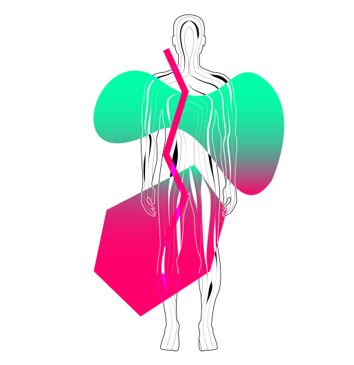
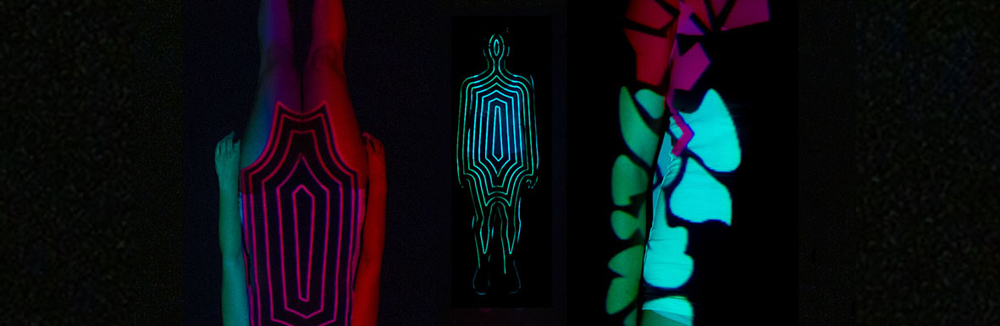

Projet : création d’un générique de web-série « immuno-logique » ayant pour but de rassurer et d’informer la population française sur l’importance de la vaccination.
Description : le mapping nous permet de rendre compte des choses invisibles dans notre corps. Les visuels projetés représentent les flux corporel. Le générique retrace l’avancée du vaccin dans notre corps. Celui-ci est compris dans ces flux par une couleur/forme distincte.
 Téléchargement de la video 1 Téléchargement de la video 2Objectif : science et design ont un enjeu commun de clarification de données complexes afin d’informer. Dans l’histoire du graphisme on peut se référer à l’entreprise pharmaceutique Geigy qui cherche par ses packagings à véhiculer un message direct et simple pour parler à tous. Le médecin/graphiste Fritz Khan a une représentation plus figurative et ludique qui vulgarise l’anatomie humaine et la mécanique du corps. Le design aide la science à donner une interprétation plus sensible et poétique. La vaccination a un lien avec le graphisme par l’idée de processus synthétique. La science cherche à hiérarchiser et mettre en place une stratégie pour mener une action. Ce qui peut être mis en parallèle, avec le processus de transmission de message dans la rhétorique visuelle.